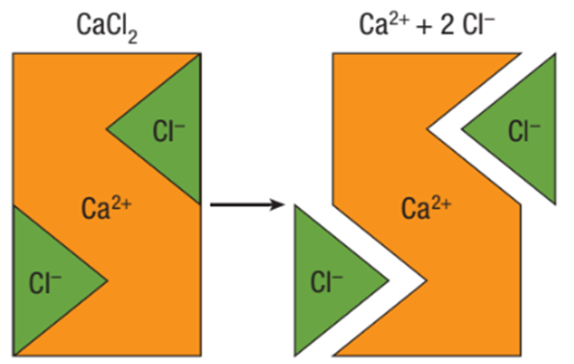
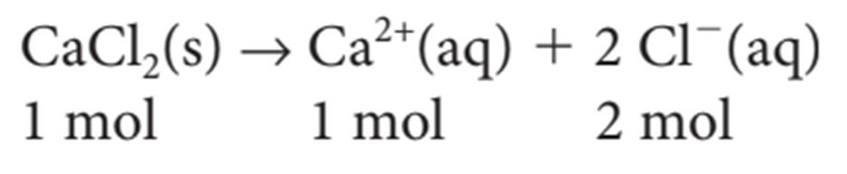

Callout
If the volume and concentration of both of the reactants are given, you will have to determine which of them is the limiting reagent.
To determine which one is the limiting reagent, determine the amount of one reactant required to react completely with the other reactant.
| Limiting reagent
- the reactant that is completely used up during the reaction.) |

Callout
How do the final concentrations of chloride and calcium ions compare to the initial concentration of the compound?

Callout
This equation is called a dissociation equation. It indicates that for each mole of calcium chloride in the solution, 1 mol of calcium ions and 2 mol of chloride ions dissociate from each other.